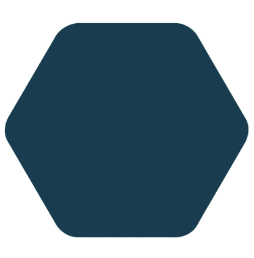
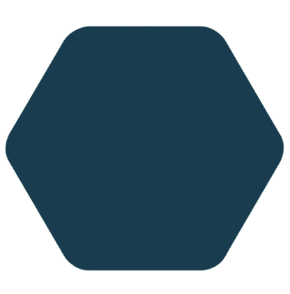

Hello, my name is Raoan! I have a great interest in technology and am always exploring new trends. Additionally, I am passionate about games and competitions, ranging from Formula 1 to soccer and even eSports. I am an enthusiast of cars, fascinated
by both their design and engineering, and I enjoy keeping up with the latest developments in the sector. My musical taste is quite eclectic, covering a wide range of genres from one extreme to the other. Besides these passions, I enjoy engaging
in various activities, always seeking new challenges and learning opportunities. I am a dynamic and versatile person, with interests that span from technology and entertainment to the automotive world and music.
Porto União, SC, Brasil
10/27/2004
Driver's license ✓
| Languages |
Explore this portfolio from a new perspective! Choose one of the languages I speak for a new experience.
| Technologies |
Still a beginner in Rust, I'm learning the fundamentals like data types, flow control and secure programming principles. I am becoming familiar with concepts such as ownership, borrowing and lifetimes, which are central to management of
memory in Rust. By practicing regularly, I am dedicated to becoming a competent developer, leveraging the performance and security that Rust offers.
I have an intermediate level in JavaScript. I am proficient in ES6, DOM manipulation and use of frameworks such as React and Node.js. I have experience in creating dynamic web applications and implementing interactive features. I continue
to improve my skills and explore new tools and techniques in the language.
Still a beginner in C++, I'm learning the fundamentals such as data types, flow control and object-oriented programming principles. I'm getting familiar with concepts like pointers, references, and memory management dynamics, which are
central to efficiency and flexibility in C++. By practicing regularly, I am dedicated to becoming a competent developer, taking advantage of the low-level performance and capabilities that C++ offers.
I have advanced CSS skills, mastering techniques such as flexbox and grid to create responsive and complex layouts. I have experience in CSS animations, 3D transformations and efficient use of pseudo-classes and pseudo-elements. Furthermore,
I use preprocessors like SASS/SCSS for more organized and modular CSS development.
I have advanced skills in SASS, efficiently using variables, mixins and functions to modularize and organize CSS styles in a scalable way. I am familiar with creating reusable components, advanced use of nesting and precise control over
style generation through SASS. Additionally, I integrate SASS with front-end frameworks and automation tools to optimize the web development flow.
Intermediate knowledge of Angular, using components, services and routing to develop dynamic web applications. I am familiar with creating and consuming RESTful APIs, as well as using RxJS for management of asynchronous data flows. Additionally,
I have basic experience in unit testing with Jasmine and Karma, and I am focused on improving my skills to build more complex and robust applications using Angular.
I'm starting to learn React, focusing on components, props and basic state. I'm exploring how to build dynamic interfaces with JSX and manage events. I'm excited to progress and master concepts like hooks and advanced state management.
I have intermediate knowledge in SQL, able to write complex queries using basic operations such as SELECT, INSERT, UPDATE and DELETE, as well as JOINs to combine data from different tables. I'm focused on improving my skills in database
modeling and query optimization.
I'm familiar with PostgreSQL, using it to manage relational databases. I have experience with creating tables, defining schemas, and writing SQL queries to retrieve and manipulate data. Additionally, I am exploring advanced features like
indexes, stored functions, and transactions to improve efficiency and data integrity. I am committed to expanding my knowledge of PostgreSQL to develop robust and scalable solutions.
I'm starting to learn MongoDB, exploring basic concepts like documents, collections and databases. I am familiar with fundamental operations such as inserting, querying, updating and deleting documents. I'm excited to learn more about
advanced queries, indexes, and how to integrate MongoDB into applications for efficient storage and retrieval of non-relational data.
I use Ubuntu daily as my main operating system for my work. I'm familiar with its intuitive GNOME-based interface, and I efficiently use its built-in tools and default applications. I use the terminal to perform administrative and development tasks, leveraging
the vast community and documentation to solve problems and learn new skills. I am committed to exploring and utilizing advanced features of Ubuntu to optimize my productivity and user experience.
In the past, I have used Fedora as my main operating system. I enjoyed its GNOME-based interface and the reliability of frequent updates. During this period, I explored its capabilities for development and systems administration, using
the terminal to perform a variety of tasks. The experience gave me an in-depth understanding of its advanced features and allowed me to efficiently optimize my workflow.
I currently use Windows as my main operating system. In addition to its familiar and robust interface, which makes it easy to perform a wide range of personal and professional tasks, I also appreciate its well-developed architecture. The
architecture of operating systems like Windows involves layers of abstraction that manage hardware resources, offering a stable and reliable platform for software development, file management, and application execution. I'm always
interested in understanding more deeply how operating system architecture influences user experience and daily work efficiency.

 
